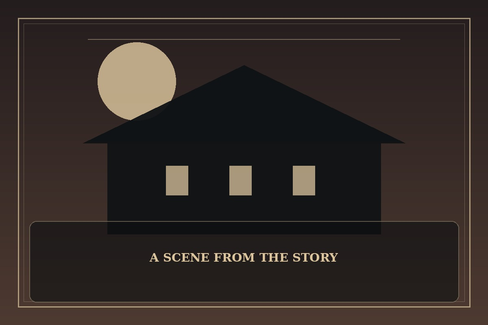

Even if I Fall into a Ghost Story, I Still Have to Go to Work
Synopsis
An overworked employee finds that the office’s strangest late-night incidents may involve actual ghosts. Even the supernatural cannot erase deadlines, rent, or the need for a decent cup of coffee.
Chapter 1: Overtime with the Unliving
At 11:48 p.m., the office printer began producing pages covered in names of employees who had never worked at the company. Mina stared at the stack, checked the toner, and decided that whatever the explanation, someone would blame her if the printer stayed broken.
A translucent figure appeared beside the copy machine and asked whether the company still offered dental coverage. Mina nearly screamed, then remembered the overtime policy did not include hazard pay. She gave the ghost a visitor badge and asked it to wait while she finished the report due at midnight.
By the time the report was sent, the ghost had fixed the printer and shared a surprisingly useful spreadsheet tip. Mina clocked out at 12:06, thanked the spirit, and made a note to tell HR about the new after-hours contractor. The elevator doors opened onto an empty lobby, where a second ghost was already waiting with a stack of forms.

This fan-made sample is an original piece created for a student website project; it is not an official chapter of Even if I Fall into a Ghost Story, I Still Have to Go to Work.